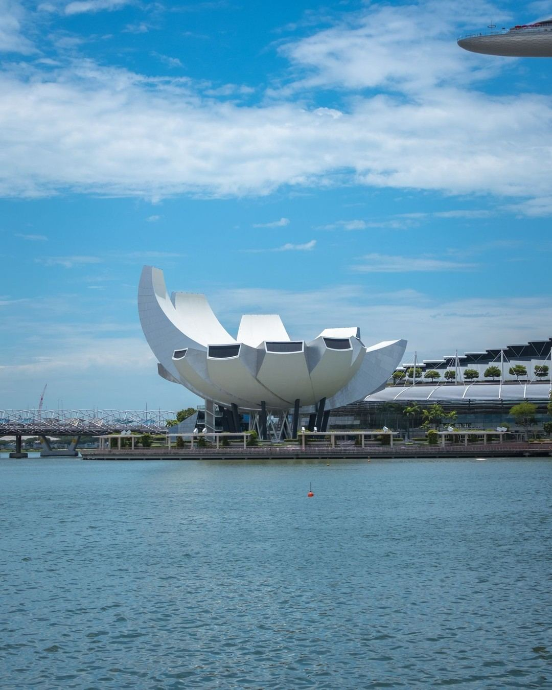
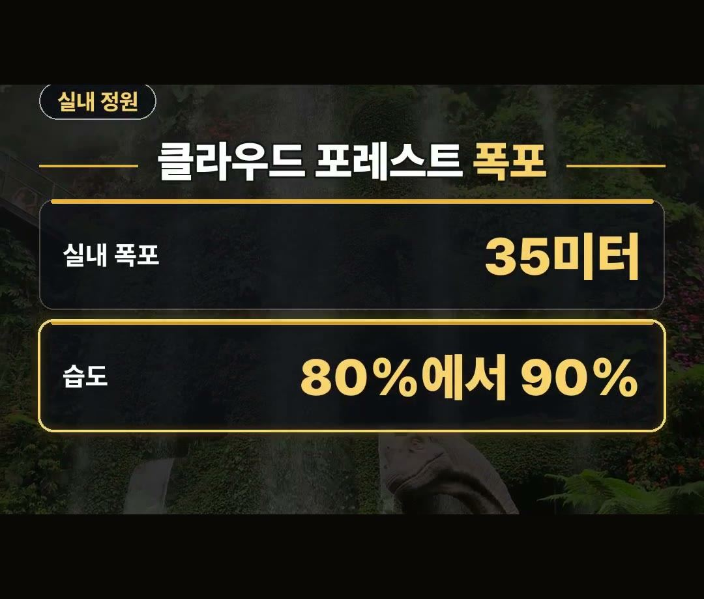
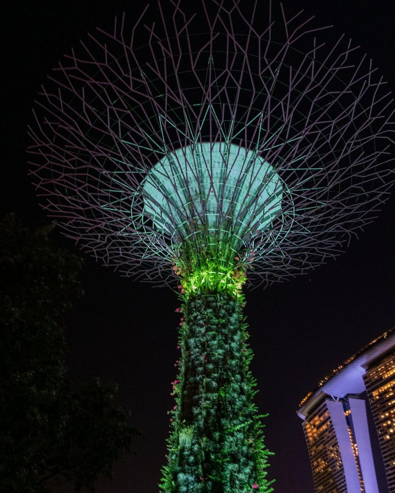
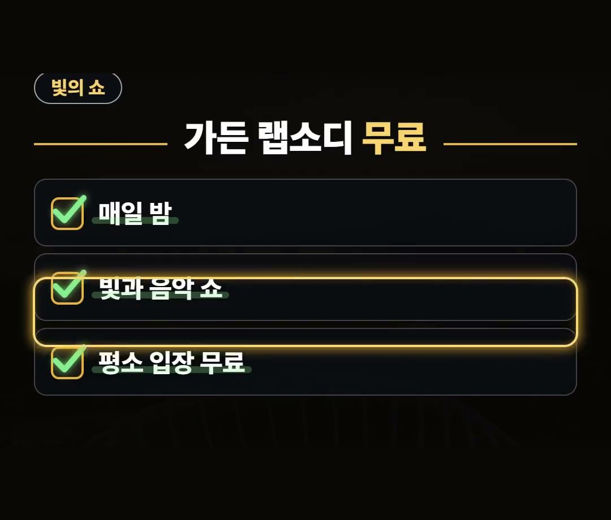
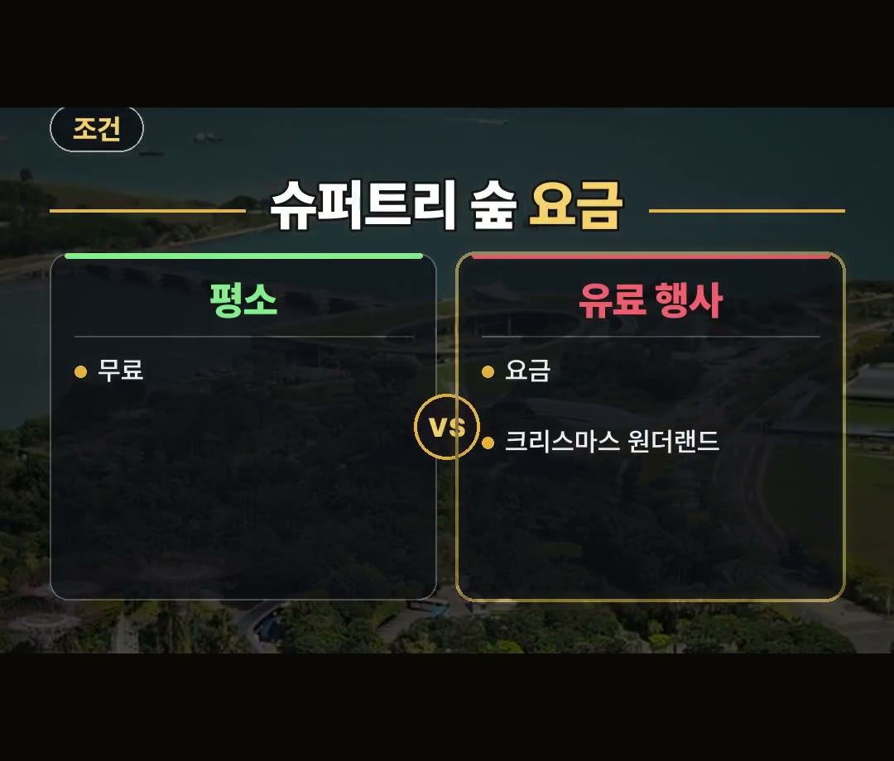
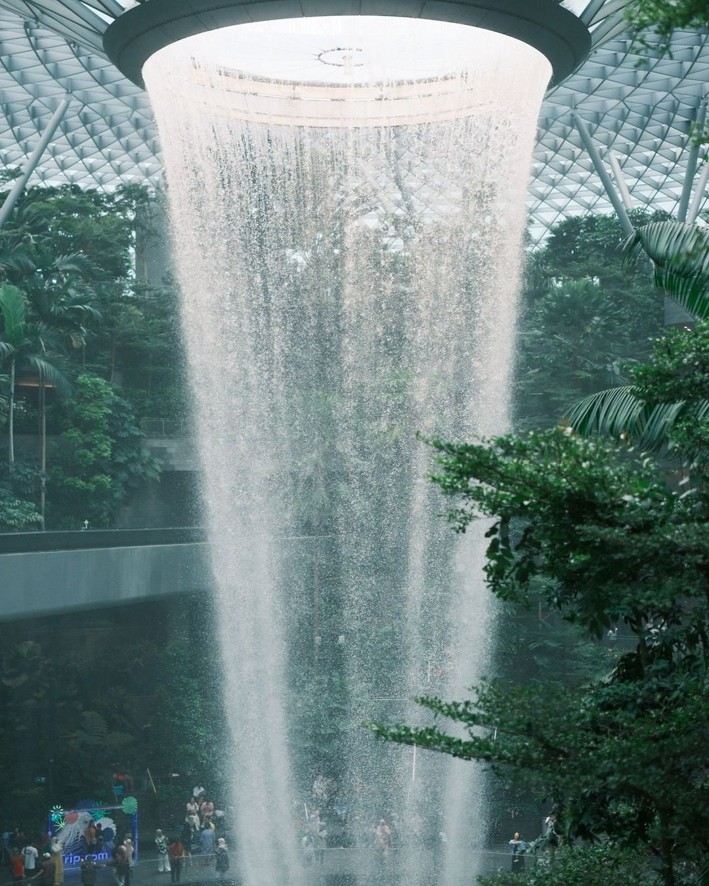

싱가포르 여행코스, 무료 빛 쇼와 정원 입장권 동선 정리
※ 이 글에는 제휴 링크가 포함되어 있으며, 링크를 통해 예약·구매하시면 일정 수수료를 받을 수 있습니다. (가격은 같습니다)
※ 이 포스팅은 쿠팡 파트너스 활동의 일환으로, 이에 따른 일정액의 수수료를 제공받습니다.
싱가포르 여행 일정을 짤 때 많은 분이 놓치는 조건이 하나 있어요.
슈퍼트리 숲의 빛 쇼는 평소 입장이 무료지만, 유료 행사 때는 요금이 붙을 수 있다는 점입니다.
이 글에서는 낮에는 실내 정원, 해가 지면 무료 빛 쇼, 마지막 날은 공항 폭포로 이어지는 싱가포르 여행코스를 2026년 10월 공식 안내 기준으로 정리했어요.
가든 랩소디는 평소 입장 무료예요.
다만 크리스마스 원더랜드 같은 유료 행사 때는 슈퍼트리 숲에 요금이 붙을 수 있으니, 여행 날짜에 행사가 있는지부터 확인하세요! 🌃

낮과 밤을 나누면 동선이 단순해져요
싱가포르 동선은 시간대로 나누면 정리가 쉬워집니다.
- 낮: 가든스 바이 더 베이의 실내 정원
- 해가 진 뒤: 슈퍼트리 숲의 무료 빛 쇼
- 마지막 날: 쥬얼 창이의 레인 보텍스
낮에는 실내 정원을 둘러보고, 해가 지면 슈퍼트리 숲으로 옮겨 빛 쇼를 보는 흐름이에요.
마지막 날은 공항 가는 길에 실내 폭포를 넣으면, 따로 하루를 빼지 않아도 일정 끝에 볼거리를 하나 더 챙길 수 있어요.

싱가포르 여행코스 짜는법 — 정원 입장권부터
가든스 바이 더 베이에는 플라워 돔과 클라우드 포레스트를 묶은 입장권이 있어요.
두 실내 정원을 같은 날 둘러볼 생각이라면, 낮 일정을 짜기 전에 이 묶음 입장권부터 알아보세요.
클라우드 포레스트에서 볼 것은 이렇습니다.
- 35미터 실내 폭포
- 습도 80%에서 90%의 실내 숲
싱가포르 여행코스 짜는법의 첫 단계로, 낮 일정의 중심을 이 실내 정원 두 곳에 두면 나머지 순서가 자연스럽게 정해져요.


해가 지면 슈퍼트리 숲의 가든 랩소디
낮 일정을 마쳤다면 슈퍼트리 숲으로 가 보세요.
가든 랩소디는 슈퍼트리 숲에서 매일 밤 열리는 빛과 음악 쇼입니다.
- 매일 밤
- 빛과 음악 쇼
- 평소 입장 무료
낮에는 정원, 밤에는 쇼로 나누면 가든스 바이 더 베이 한 곳에서 하루를 길게 쓸 수 있어요.
해가 질 무렵 실내 정원에서 나와 슈퍼트리 숲 쪽으로 옮겨 가면, 쉬는 틈 없이 밤 일정으로 이어 갈 수 있습니다.

유료 행사 날엔 요금이 붙을 수 있어요
여기서 많은 분이 놓치는 조건이 나옵니다.
크리스마스 원더랜드 같은 유료 행사 때는 슈퍼트리 숲에 요금이 붙을 수 있어요.
- 평소: 입장 무료
- 유료 행사 때: 요금이 붙을 수 있음 (예: 크리스마스 원더랜드)
그래서 무료 빛 쇼를 일정에 넣었다면, 여행 날짜에 슈퍼트리 숲에서 유료 행사가 열리는지 미리 확인해 두세요.
행사가 있는 날이라면 그날 요금이 붙는지까지 같이 보면, 현장에서 당황할 일이 줄어들어요.

마지막 날은 쥬얼 창이의 레인 보텍스
여행의 마지막 날은 공항으로 향하게 되죠.
쥬얼 창이에는 레인 보텍스라는 실내 폭포가 있고, 밤에는 이 실내 폭포에서 빛과 음악 쇼가 열립니다.
- 공항 가는 날 일정 끝에 넣기
- 밤에는 실내 폭포 빛과 음악 쇼
공항 가는 날 일정 끝에 넣으면 동선을 따로 늘리지 않아도 돼요.
짐을 챙겨 떠나는 날이라 일정을 무겁게 잡기 어려운데, 공항에 있는 폭포라 마지막 일정으로 넣기 알맞습니다.
현지에서 지도를 보며 움직이려면 데이터가 있어야 하니, 이심은 출발 전에 미리 준비해 두세요.

정리
- 싱가포르 여행코스는 낮에는 실내 정원, 해가 지면 슈퍼트리 숲의 무료 빛 쇼, 마지막 날은 쥬얼 창이 레인 보텍스 순서로 짜요.
- 가든스 바이 더 베이에는 플라워 돔과 클라우드 포레스트 묶음 입장권이 있고, 클라우드 포레스트에는 35미터 실내 폭포가 있어요.
- 가든 랩소디는 평소 입장 무료지만, 크리스마스 원더랜드 같은 유료 행사 때는 슈퍼트리 숲에 요금이 붙을 수 있어요.
여러분은 실내 정원과 빛 쇼 가운데 어느 쪽이 더 기대되세요?
예약 링크는 아래에 모아 두었어요.
지금 쓸 수 있는 여행사 할인
- 📶 해외 데이터는 이심으로 미리 준비하세요 (마이리얼트립 마이심)
※ 여행사 사정으로 조건이 바뀌거나 일찍 끝날 수 있어요. 예약 전에 여행사 화면에서 한 번 더 확인하세요. (2026-10-05 확인)
📘 무료 여행 가이드 전자책 모음 보기 (오사카 · 후쿠오카 · 타이베이 · 도쿄 · 일본겨울) ›
📌 2026년 10월 기준 정보예요. 가격은 환율·시기에 따라 달라질 수 있어요.
영상 화면: Pexels (Arian Fernandez, CK Seng, Febe Vanermen, Florian Delée, Gopinath Mohanta, Nirjhar Basak)
사진: Pexels (Renata Meneses, Arian Fernandez, Joanie xie)